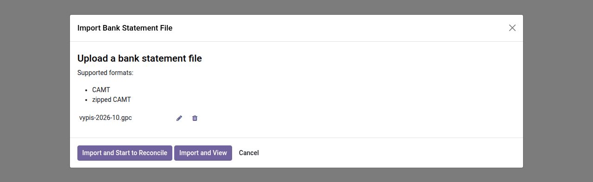
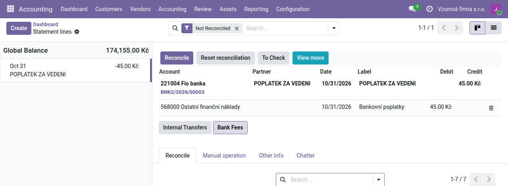

Task guide
Bank accounts
A bank account in Odoo, importing a GPC or CAMT statement, matching by variable symbol, bank fees and ABO payment orders to suppliers — and what each step posts.
| Country | Czech Republic |
|---|---|
| Edition | Odoo Community |
| Covers | account, account_statement_import_base, account_statement_import_file, account_statement_import_gpc, account_statement_import_camt, account_statement_import_camt_balance, account_reconcile_oca, account_reconcile_oca_counter_account, l10n_cssk_payment_symbols, l10n_cssk_payment_symbols_oca, account_payment_order, account_payment_mode, l10n_cssk_payment_symbols_payment_order, account_abo, account_banking_sepa_credit_transfer, l10n_cssk_payment_symbols_sepa_oca, account_fio, account_statement_fio |
What this guide is for
In Odoo the bank statement is where payments come from: an invoice is paid when its open item is matched with a statement line. This guide follows the whole cycle — from creating the bank account through importing a statement and matching to a payment order to suppliers — and what each step posts.
The terms and menus are explained in Odoo for a Czech accountant, the bank journal's accounts in Setting up account assignment.
Bank account
Every bank account is a bank journal in Odoo, with a 221 sub-account of
its own. Create one in Accounting → Configuration → Accounting → Journals →
New: Type Bank, a name (for example Fio banka) and, on the Journal
Entries tab, the Bank Account Number — as an IBAN or in the Czech form
prefix-number/bank code. Odoo creates a 221 account named after the journal
(for example 221004 Fio banka) and sets the Suspense Account to 261000
Cash in transit.
On the Accounting dashboard every bank journal has a card with its balance, the number of unmatched lines, and buttons to import and match.
Importing a statement
Czech banks let you download the statement from internet banking in the GPC format (also offered as ABO), and many of them as CAMT.053 (XML) as well. Download it for the period not yet in Odoo, then:
- on the bank's card on the dashboard click Import (OCA), or use Accounting → Accounting → Import Statement;
- Upload your file and Import and View.
Odoo picks the bank journal from the account number in the statement, takes
the opening and closing balances, and creates a line for every movement. A
GPC file covering several days gives one statement per day, named
GPC <account>/<number>.

Importing the same GPC file again is safe: lines already imported are
skipped, so a file that overlaps an earlier one brings in only the new
movements (account_statement_import_gpc).
Do not import the same CAMT statement twice — the CAMT import does not
detect a duplicate and creates a second statement with the same movements;
delete a statement imported by mistake before its lines are matched.
The import window lists only CAMT under Supported formats; GPC files are accepted all the same.
If the bank's card has no import button (the journal existed before the import was installed), set the journal's Bank Feeds field to Import (OCA).
On import, the payment symbols — VS, KS, SS — are read from each line and
written into the line's label (VS:202600001 KS:0308), with the
counterparty's account number. The partner is filled in from that account
number when you have the account on a partner:
l10n_cssk_payment_symbols.
If the import refuses a CAMT statement because "the balance does not match"
although the file is correct (some banks report daily intermediate balances
or the balance in another form), install the fix
account_statement_import_camt_balance
from Apps.
Other ways to get a statement in:
- Fio banka — statements are fetched automatically through the Fio API: Fio banka.
- Automatic bank statements — movements on accounts at Czech and Slovak banks fetched through Tatra banka's Premium API: Automatic bank statements.
- By hand — Accounting → Accounting → Bank and Cash → Bank Statements → New.
Automatic matching
Already on import, statement lines are matched with open invoices by variable symbol:
- exactly one open invoice carries the symbol → it is matched;
- several do → the one whose open amount equals the payment is taken, if exactly one does;
- when the payer is known (from the account number), only their documents are considered;
- leading zeros are ignored (
0042=42).
A partial payment is matched and the rest of the invoice stays open. An
overpayment is never matched automatically — it is left to you. The module
never guesses: whatever is ambiguous is left for manual matching
(l10n_cssk_payment_symbols_oca).
Posting of matched lines:
| Statement line | Account | Debit | Credit |
|---|---|---|---|
| Payment from a customer, 48,400 Kč | 221004 Fio banka | 48,400 | |
| 311000 Customers | 48,400 | ||
| Payment to a supplier, 24,200 Kč | 321000 Suppliers | 24,200 | |
| 221004 Fio banka | 24,200 |
Manual matching
What was not matched automatically is behind the … to reconcile button on the bank's card, or in Accounting → Accounting → Reconcile. On the left are the unmatched statement lines, on the right the proposed entry and, on the Reconcile tab below it, the open items of customers and vendors.

- Paying an invoice: click the invoice in the list of open items (search by partner, amount or number), check the proposed lines, and click Reconcile.
- A bank fee, interest, a transfer between your own accounts: the Bank Fees and Internal Transfers buttons above the tabs fill in the counter-account in one click.
- Anything else: the Manual operation tab — account, partner, label and amount typed by hand.
- To Check sets a line aside when you are unsure; Reset reconciliation puts a matched line back.
For a payment with no symbol, the payer's account number, which the
reconciliation screen shows next to the statement line, helps
(account_reconcile_oca_counter_account).
Put that account number on the partner and Odoo recognises them next time.
The Bank Fees button posts the fee to the account set in Accounting → Configuration → Accounting → Reconciliation Models → Bank Fees. With the Czech chart Odoo sets it wrongly to 501000 (material consumption); change it to 568000 Other financial expenses. Check as well that the Internal Transfers model goes to 261001 Liquidity Transfer.
| Statement line | Account | Debit | Credit |
|---|---|---|---|
| Account maintenance fee, 45 Kč | 568000 Other financial expenses | 45 | |
| 221004 Fio banka | 45 |
Until a line is matched, it is posted against 261000 Cash in transit. The balance of 261000 is therefore the sum of unmatched movements — at the end of the month it should be nil.
Payment order to suppliers
Payments of vendor bills are prepared in Odoo in bulk and uploaded to the bank as one file. For domestic payments in CZK that file is ABO, the hromadný příkaz k úhradě every Czech bank accepts:
- Once: the users who prepare payments need the group Accounting / Payments, which the Accountant role does not include. An administrator adds them in developer mode, in Settings → Users & Companies → Groups. In Accounting → Configuration → Accounting → Payment Modes create a mode, for example Příkaz ABO: Payment Method ABO (Czech credit transfer), Link to Bank Account Fixed, Fixed Bank Journal your bank journal. Every vendor you pay needs a bank account on the contact.
- Accounting → Vendors → Payment Orders → New, choose the Payment Mode and set Payment Execution Date Type to Immediately or Fixed Date: an ABO file has one due date for all its payments, so the default Due Date is refused as soon as the bills fall due on different days.
- Create Payment Lines from Journal Items → Add All Move Lines (or only selected ones) → Create Transactions. Add All Move Lines offers the bills that carry the same payment mode as the order: set the Supplier Payment Mode on your vendors, or switch Payment Mode in this window to Any. Each line gets the vendor's account, the amount, and the bill's VS, KS and SS.
- Confirm Payments and Generate Payment File. Download the
.abofile and upload it to internet banking, where you authorise the order. - Click File Successfully Uploaded. The bills move to In Payment.
What the file contains and what it refuses (other currencies, foreign
accounts) is described in account_abo. With Fio
banka the file can also be sent to the bank from Odoo:
account_payment_fio.
Payments in EUR go out as a SEPA file (pain.001) instead: install
Account Banking SEPA Credit Transfer from Apps and create a payment
mode with the method SEPA Credit Transfer to suppliers.
l10n_cssk_payment_symbols_sepa_oca
then writes the bill's VS, KS and SS into the file.
Posting. When the upload is confirmed, each payment posts:
| Document | Account | Debit | Credit |
|---|---|---|---|
| Payment (File Successfully Uploaded) | 321000 Suppliers | 968 | |
| 221003 Outstanding Payments | 968 | ||
| Statement line (matched with the payment) | 221003 Outstanding Payments | 968 | |
| 221004 Fio banka | 968 |
When the payment appears on the statement, the statement line is not matched automatically — the bill is already settled by the payment, which waits to be matched with the bank. In Reconcile, match it with the payment's item on account 221003 (find it in the list by vendor or amount). The balance of 221003 is the payments sent to the bank and not yet matched with a statement.
Month-end check
- The closing balance of the last statement in Odoo equals the balance on the bank's statement (the bank's card on the dashboard, Balance).
- 261000 Cash in transit is nil — nothing waits to be matched.
- 221002 Outstanding Receipts and 221003 Outstanding Payments hold only payments the bank has really not yet credited or debited.
See the accounts in Accounting → Reporting → OCA accounting reports → General Ledger or Trial Balance for the month.